2024 National 5 Physics - Section 2 questions
Source: Scottish Qualifications Authority (SQA) / Qualifications Scotland. This is a StemInteract HTML companion, not an official HTML edition. Selectable text is supplied alongside original page images. Use the images or original PDF for equations, powers, fractions, vector notation, tables and diagrams; text extraction cannot fully preserve mathematical layout.
Jump to a question
PDF page 1
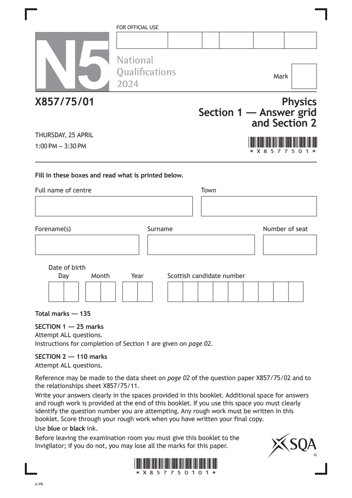
Selectable page text
FOR OFFICIAL USE
N5
National
Qualications
Mark
2024
X857/75/01 Physics
Section 1 — Answer grid
and Section 2
THURSDAY, 25 APRIL
1:00 PM – 3:30 PM
*X8577501*
Fill in these boxes and read what is printed below.
Full name of centre Town
Forename(s) Surname Number of seat
Date of birth
Day Month Year Scottish candidate number
Total marks — 135
SECTION 1 — 25 marks
Attempt ALL questions.
Instructions for completion of Section 1 are given on page 02.
SECTION 2 — 110 marks
Attempt ALL questions.
Reference may be made to the data sheet on page 02 of the question paper X857/75/02 and to
the relationships sheet X857/75/11.
Write your answers clearly in the spaces provided in this booklet. Additional space for answers
and rough work is provided at the end of this booklet. If you use this space you must clearly
identify the question number you are attempting. Any rough work must be written in this
booklet. Score through your rough work when you have written your final copy.
Use blue or black ink.
Before leaving the examination room you must give this booklet to the
Invigilator; if you do not, you may lose all the marks for this paper.
©
*X857750101*
A/PBPDF page 2

Selectable page text
SECTION 1 — 25 marks
The questions for Section 1 are contained in the question paper X857/75/02.
Read these and record your answers on the answer grid on page 03 opposite.
Use blue or black ink. Do NOT use gel pens or pencil.
1. The answer to each question is either A, B, C, D or E. Decide what your answer is, then fill
in the appropriate bubble (see sample question below).
2. There is only one correct answer to each question.
3. Any rough work must be written in the additional space for answers and rough work at the
end of this booklet.
Sample question
The energy unit measured by the electricity meter in your home is the
A ampere
B kilowatt-hour
C watt
D coulomb
E volt.
The correct answer is B — kilowatt-hour. The answer B bubble has been clearly filled in
(see below).
A B C D E
Changing an answer
If you decide to change your answer, cancel your first answer by putting a cross through it (see
below) and fill in the answer you want. The answer below has been changed to D.
A B C D E
If you then decide to change back to an answer you have already scored out, put a tick (✓) to the
right of the answer you want, as shown below:
A B C D E A B C D E
or
*X857750102*
page 02PDF page 3
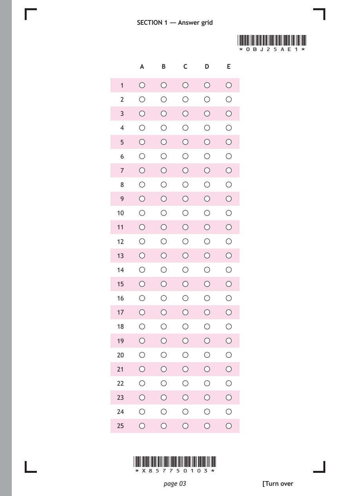
Selectable page text
SECTION 1 — Answer grid
*OBJ25AE1*
A B C D E
1
2
3
4
5
6
7
8
9
10
11
12
13
14
15
16
17
18
19
20
21
22
23
24
25
*X857750103*
page 03 [Turn overPDF page 4

Selectable page text
[BLANK PAGE]
DO NOT WRITE ON THIS PAGE
*X857750104*
page 04PDF page 5

Selectable page text
[Turn over for SECTION 2
DO NOT WRITE ON THIS PAGE
*X857750105*
page 05PDF page 6
Section 2, Question 1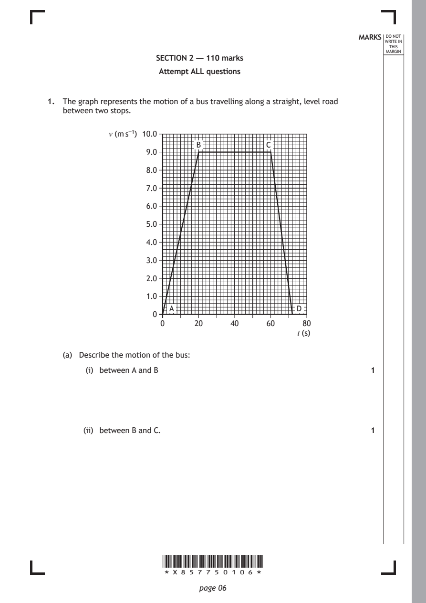
Selectable page text
MARKS _{W}^{D}_{R}^{O}_{I} _{T}^{N}OT
E IN
THIS
MARGIN
SECTION 2 — 110 marks
Attempt ALL questions
1. The graph represents the motion of a bus travelling along a straight, level road
between two stops.
v (m s⁻¹) 10.0
B C
9.0
8.0
7.0
6.0
5.0
4.0
3.0
2.0
1.0
A D
0
0 20 40 60 80
t (s)
(a) Describe the motion of the bus:
(i) between A and B 1
(ii) between B and C. 1
*X857750106*
page 06PDF page 7
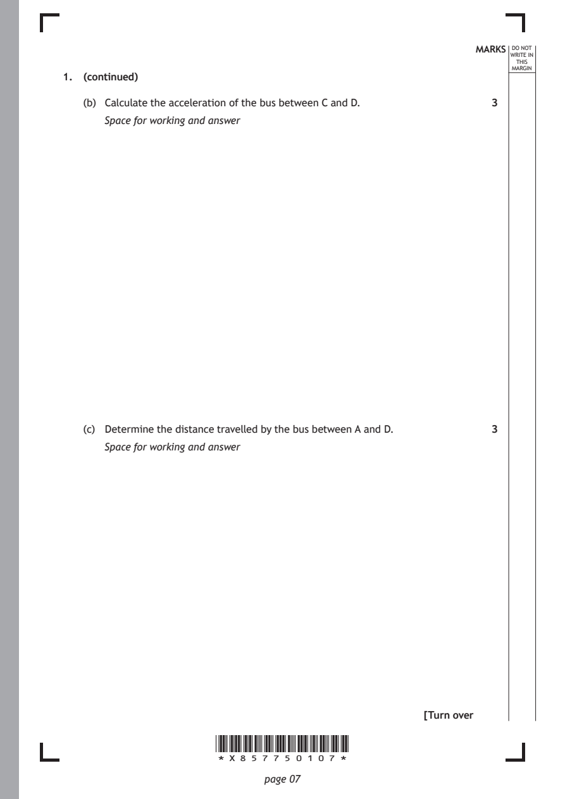
Selectable page text
MARKS _{W}^{D}_{R}^{O}_{I} _{T}^{N}OT
E IN
THIS
MARGIN
1. (continued)
(b) Calculate the acceleration of the bus between C and D. 3
Space for working and answer
(c) Determine the distance travelled by the bus between A and D. 3
Space for working and answer
[Turn over
*X857750107*
page 07PDF page 8
Section 2, Question 2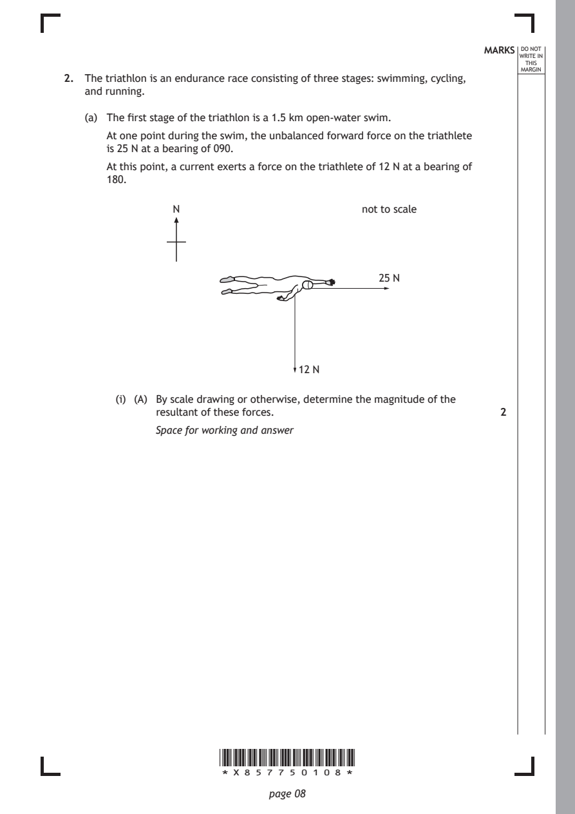
Selectable page text
MARKS _{W}^{D}_{R}^{O}_{I} _{T}^{N}OT
E IN
THIS
MARGIN
2. The triathlon is an endurance race consisting of three stages: swimming, cycling,
and running.
(a) The first stage of the triathlon is a 1.5 km open-water swim.
At one point during the swim, the unbalanced forward force on the triathlete
is 25 N at a bearing of 090.
At this point, a current exerts a force on the triathlete of 12 N at a bearing of
180.
N not to scale
25 N
12 N
(i) (A) By scale drawing or otherwise, determine the magnitude of the
resultant of these forces. 2
Space for working and answer
*X857750108*
page 08PDF page 9
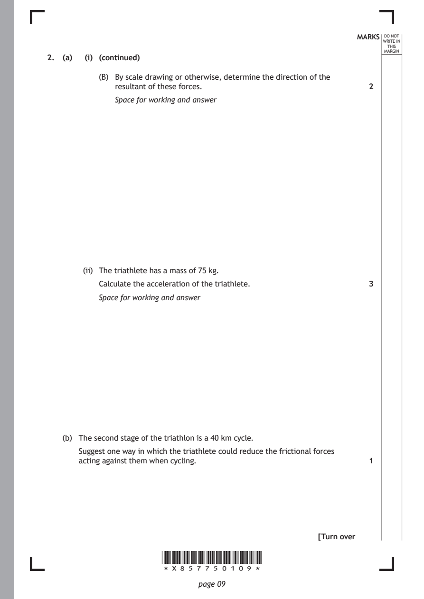
Selectable page text
MARKS _{W}^{D}_{R}^{O}_{I} _{T}^{N}OT
E IN
THIS
MARGIN
2. (a) (i) (continued)
(B) By scale drawing or otherwise, determine the direction of the
resultant of these forces. 2
Space for working and answer
(ii) The triathlete has a mass of 75 kg.
Calculate the acceleration of the triathlete. 3
Space for working and answer
(b) The second stage of the triathlon is a 40 km cycle.
Suggest one way in which the triathlete could reduce the frictional forces
acting against them when cycling. 1
[Turn over
*X857750109*
page 09PDF page 10
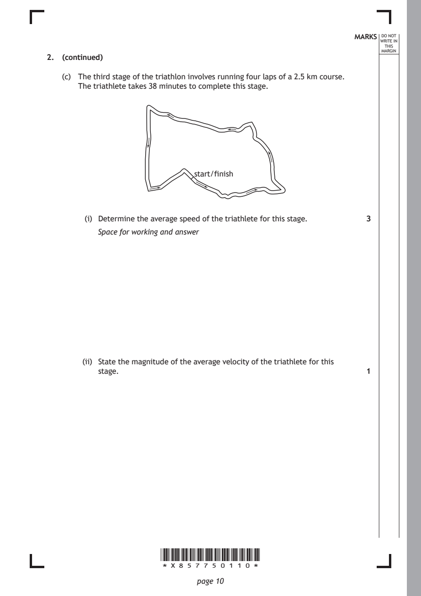
Selectable page text
MARKS _{W}^{D}_{R}^{O}_{I} _{T}^{N}OT
E IN
THIS
MARGIN
2. (continued)
(c) The third stage of the triathlon involves running four laps of a 2.5 km course.
The triathlete takes 38 minutes to complete this stage.
start/finish
(i) Determine the average speed of the triathlete for this stage. 3
Space for working and answer
(ii) State the magnitude of the average velocity of the triathlete for this
stage. 1
*X857750110*
page 10PDF page 11
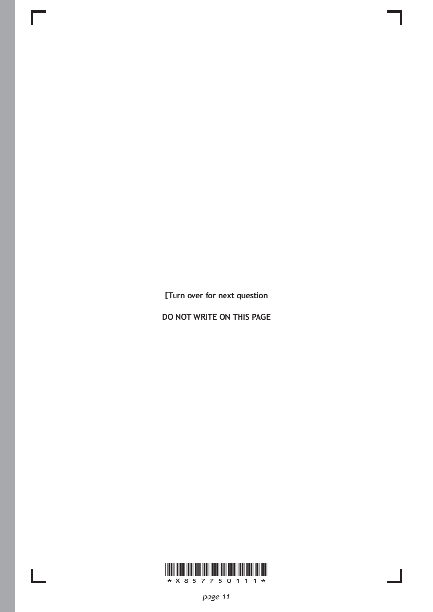
Selectable page text
[Turn over for next question
DO NOT WRITE ON THIS PAGE
*X857750111*
page 11PDF page 12
Section 2, Question 3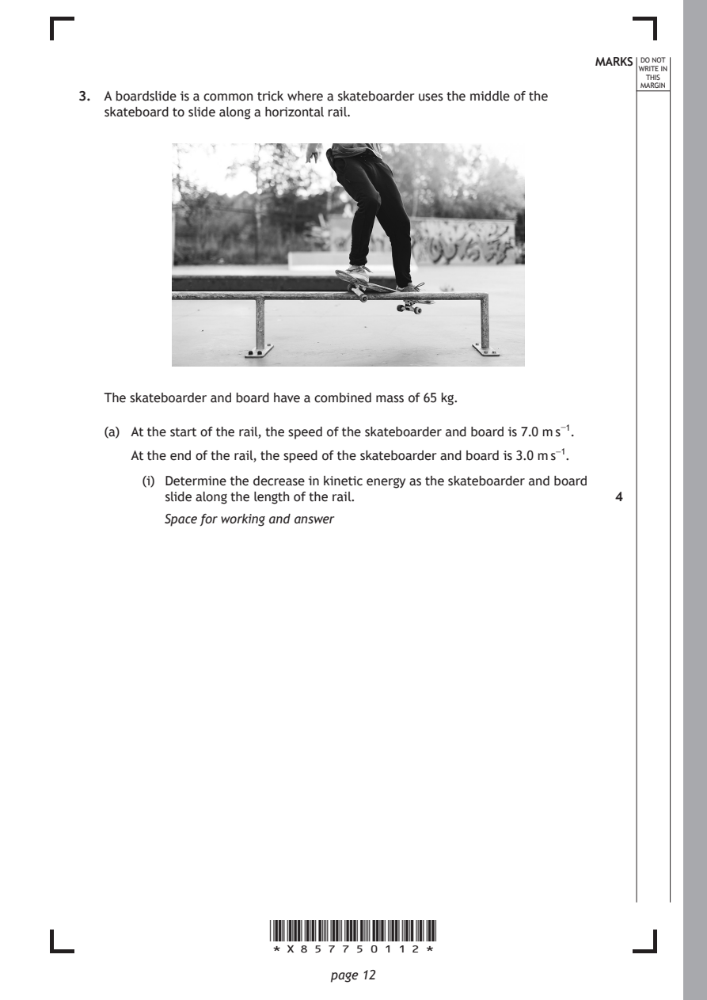
Selectable page text
MARKS _{W}^{D}_{R}^{O}_{I} _{T}^{N}OT
E IN
THIS
MARGIN
3. A boardslide is a common trick where a skateboarder uses the middle of the
skateboard to slide along a horizontal rail.
The skateboarder and board have a combined mass of 65 kg.
(a) At the start of the rail, the speed of the skateboarder and board is 7.0 m s⁻¹.
At the end of the rail, the speed of the skateboarder and board is 3.0 m s⁻¹.
(i) Determine the decrease in kinetic energy as the skateboarder and board
slide along the length of the rail. 4
Space for working and answer
*X857750112*
page 12PDF page 13
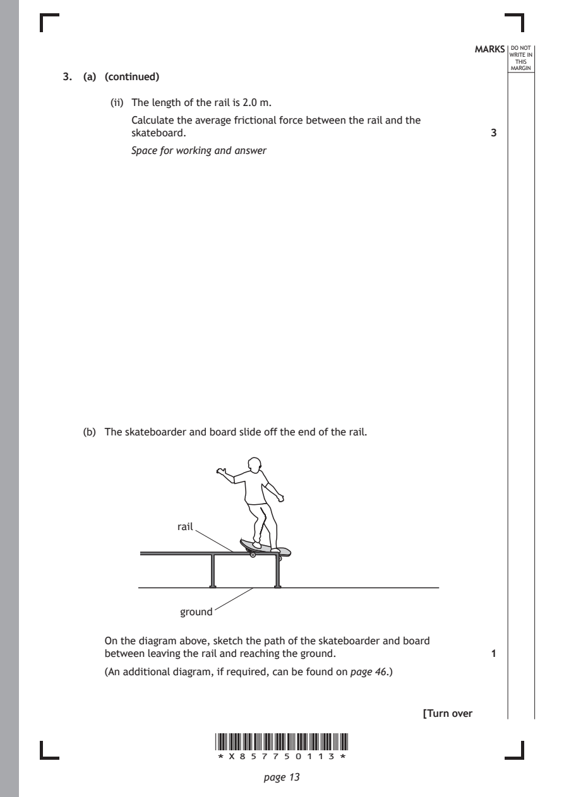
Selectable page text
MARKS _{W}^{D}_{R}^{O}_{I} _{T}^{N}OT
E IN
THIS
MARGIN
3. (a) (continued)
(ii) The length of the rail is 2.0 m.
Calculate the average frictional force between the rail and the
skateboard. 3
Space for working and answer
(b) The skateboarder and board slide off the end of the rail.
rail
ground
On the diagram above, sketch the path of the skateboarder and board
between leaving the rail and reaching the ground. 1
(An additional diagram, if required, can be found on page 46.)
[Turn over
*X857750113*
page 13PDF page 14
Section 2, Question 4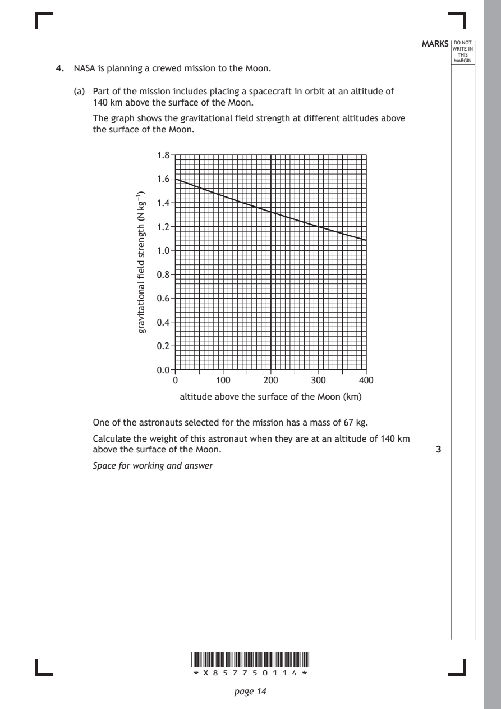
Selectable page text
MARKS _{W}^{D}_{R}^{O}_{I} _{T}^{N}OT
E IN
THIS
MARGIN
4. NASA is planning a crewed mission to the Moon.
(a) Part of the mission includes placing a spacecraft in orbit at an altitude of
140 km above the surface of the Moon.
The graph shows the gravitational field strength at different altitudes above
the surface of the Moon.
1.8
1.6
1.4
1.2
1.0
0.8
0.6
0.4
0.2
0.0
0 100 200 300 400
altitude above the surface of the Moon (km)
*X857750114*
page 14
)1−gk
N(
htgnerts
dleif
lanoitativarg
One of the astronauts selected for the mission has a mass of 67 kg.
Calculate the weight of this astronaut when they are at an altitude of 140 km
above the surface of the Moon. 3
Space for working and answerPDF page 15
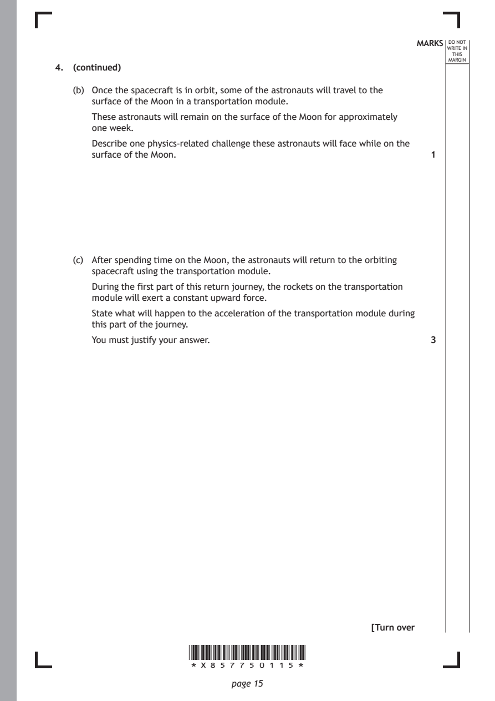
Selectable page text
MARKS _{W}^{D}_{R}^{O}_{I} _{T}^{N}OT
E IN
THIS
MARGIN
4. (continued)
(b) Once the spacecraft is in orbit, some of the astronauts will travel to the
surface of the Moon in a transportation module.
These astronauts will remain on the surface of the Moon for approximately
one week.
Describe one physics-related challenge these astronauts will face while on the
surface of the Moon. 1
(c) After spending time on the Moon, the astronauts will return to the orbiting
spacecraft using the transportation module.
During the first part of this return journey, the rockets on the transportation
module will exert a constant upward force.
State what will happen to the acceleration of the transportation module during
this part of the journey.
You must justify your answer. 3
[Turn over
*X857750115*
page 15PDF page 16
Section 2, Question 5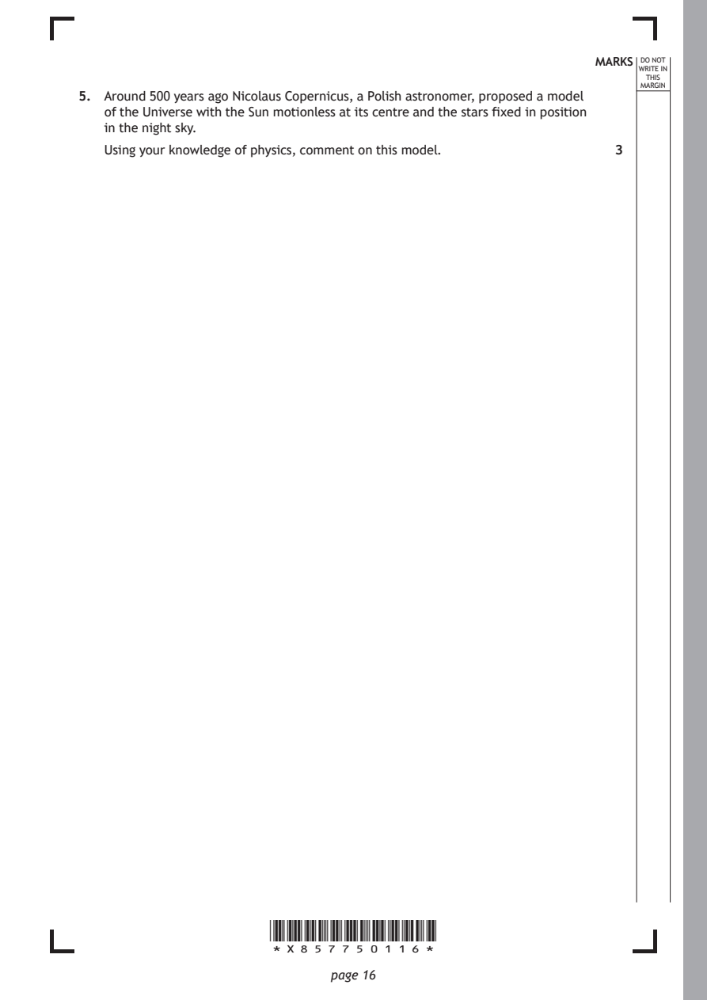
Selectable page text
MARKS _{W}^{D}_{R}^{O}_{I} _{T}^{N}OT
E IN
THIS
MARGIN
5. Around 500 years ago Nicolaus Copernicus, a Polish astronomer, proposed a model
of the Universe with the Sun motionless at its centre and the stars fixed in position
in the night sky.
Using your knowledge of physics, comment on this model. 3
*X857750116*
page 16PDF page 17
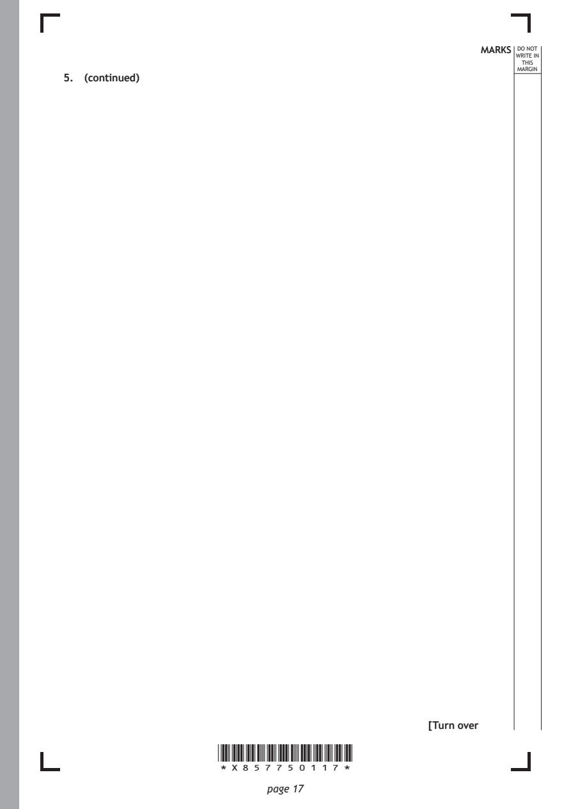
Selectable page text
MARKS _{W}^{D}_{R}^{O}_{I} _{T}^{N}OT
E IN
THIS
MARGIN
5. (continued)
[Turn over
*X857750117*
page 17PDF page 18
Section 2, Question 6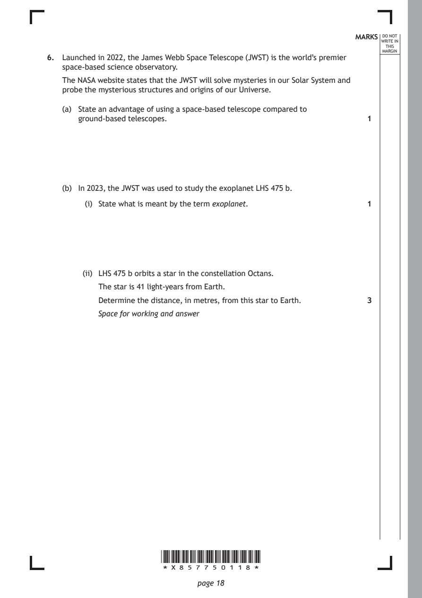
Selectable page text
MARKS _{W}^{D}_{R}^{O}_{I} _{T}^{N}OT
E IN
THIS
MARGIN
6. Launched in 2022, the James Webb Space Telescope (JWST) is the world’s premier
space-based science observatory.
The NASA website states that the JWST will solve mysteries in our Solar System and
probe the mysterious structures and origins of our Universe.
(a) State an advantage of using a space-based telescope compared to
ground-based telescopes. 1
(b) In 2023, the JWST was used to study the exoplanet LHS 475 b.
(i) State what is meant by the term exoplanet. 1
(ii) LHS 475 b orbits a star in the constellation Octans.
The star is 41 light-years from Earth.
Determine the distance, in metres, from this star to Earth. 3
Space for working and answer
*X857750118*
page 18PDF page 19
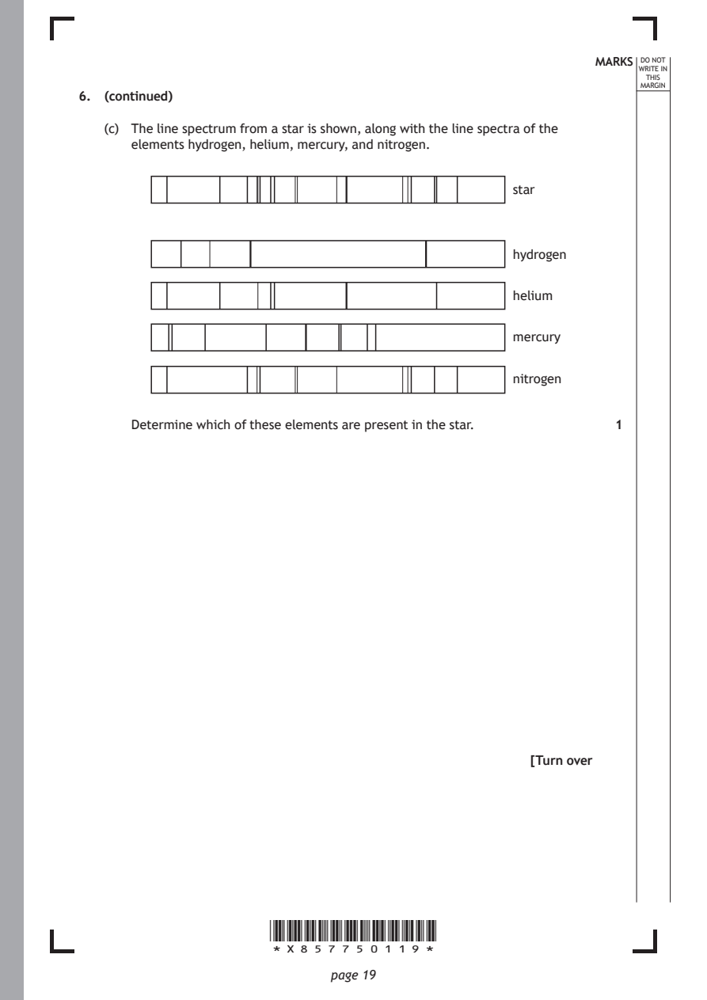
Selectable page text
MARKS _{W}^{D}_{R}^{O}_{I} _{T}^{N}OT
E IN
THIS
MARGIN
6. (continued)
(c) The line spectrum from a star is shown, along with the line spectra of the
elements hydrogen, helium, mercury, and nitrogen.
star
hydrogen
helium
mercury
nitrogen
Determine which of these elements are present in the star. 1
[Turn over
*X857750119*
page 19PDF page 20
Section 2, Question 7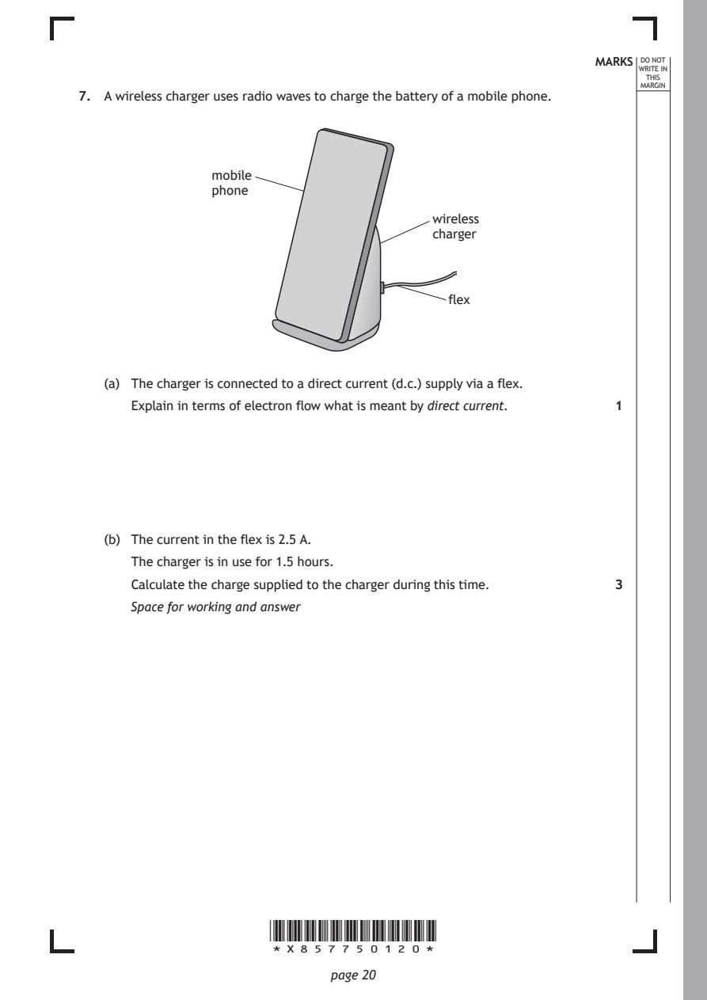
Selectable page text
MARKS _{W}^{D}_{R}^{O}_{I} _{T}^{N}OT
E IN
THIS
MARGIN
7. A wireless charger uses radio waves to charge the battery of a mobile phone.
mobile
phone
wireless
charger
flex
(a) The charger is connected to a direct current (d.c.) supply via a flex.
Explain in terms of electron flow what is meant by direct current. 1
(b) The current in the flex is 2.5 A.
The charger is in use for 1.5 hours.
Calculate the charge supplied to the charger during this time. 3
Space for working and answer
*X857750120*
page 20PDF page 21
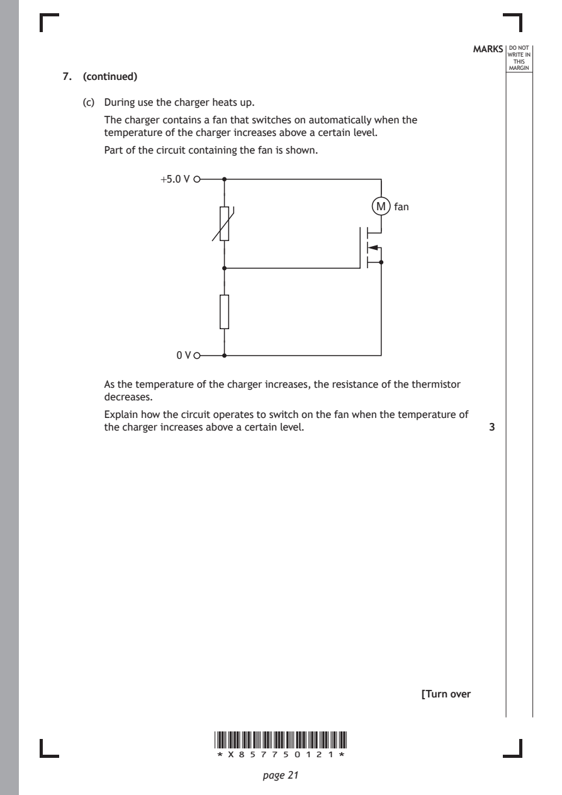
Selectable page text
MARKS _{W}^{D}_{R}^{O}_{I} _{T}^{N}OT
E IN
THIS
MARGIN
7. (continued)
(c) During use the charger heats up.
The charger contains a fan that switches on automatically when the
temperature of the charger increases above a certain level.
Part of the circuit containing the fan is shown.
+5.0 V
M fan
0 V
As the temperature of the charger increases, the resistance of the thermistor
decreases.
Explain how the circuit operates to switch on the fan when the temperature of
the charger increases above a certain level. 3
[Turn over
*X857750121*
page 21PDF page 22
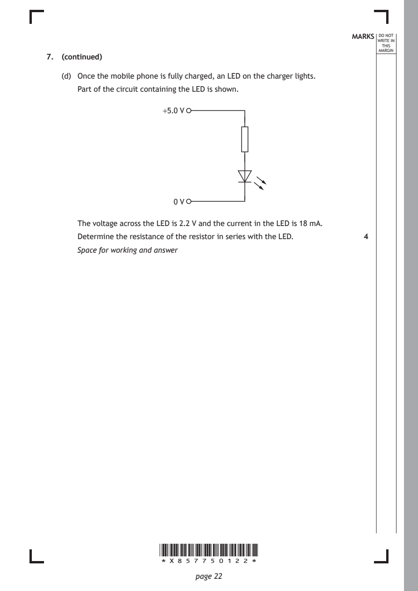
Selectable page text
MARKS _{W}^{D}_{R}^{O}_{I} _{T}^{N}OT
E IN
THIS
MARGIN
7. (continued)
(d) Once the mobile phone is fully charged, an LED on the charger lights.
Part of the circuit containing the LED is shown.
+5.0 V
0 V
The voltage across the LED is 2.2 V and the current in the LED is 18 mA.
Determine the resistance of the resistor in series with the LED. 4
Space for working and answer
*X857750122*
page 22PDF page 23
Selectable page text
[Turn over for next question
DO NOT WRITE ON THIS PAGE
*X857750123*
page 23PDF page 24
Section 2, Question 8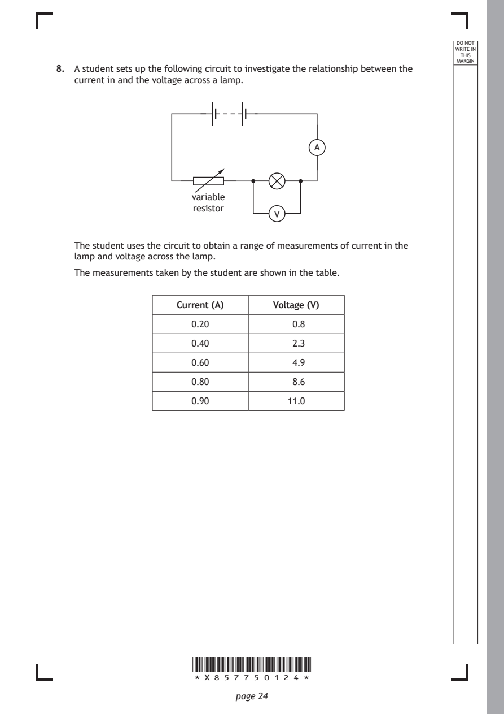
Selectable page text
DO NOT
WRITE IN
THIS
MARGIN
8. A student sets up the following circuit to investigate the relationship between the
current in and the voltage across a lamp.
A
variable
resistor
V
The student uses the circuit to obtain a range of measurements of current in the
lamp and voltage across the lamp.
The measurements taken by the student are shown in the table.
Current (A) Voltage (V)
0.20 0.8
0.40 2.3
0.60 4.9
0.80 8.6
0.90 11.0
*X857750124*
page 24PDF page 25
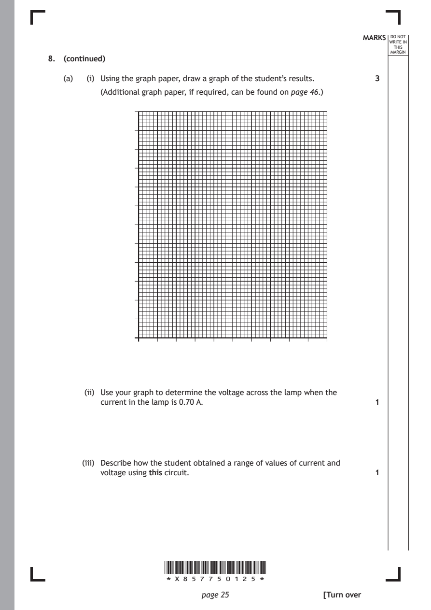
Selectable page text
MARKS _{W}^{D}_{R}^{O}_{I} _{T}^{N}OT
E IN
THIS
MARGIN
8. (continued)
(a) (i) Using the graph paper, draw a graph of the student’s results. 3
(Additional graph paper, if required, can be found on page 46.)
(ii) Use your graph to determine the voltage across the lamp when the
current in the lamp is 0.70 A. 1
(iii) Describe how the student obtained a range of values of current and
voltage using this circuit. 1
*X857750125*
page 25 [Turn overPDF page 26
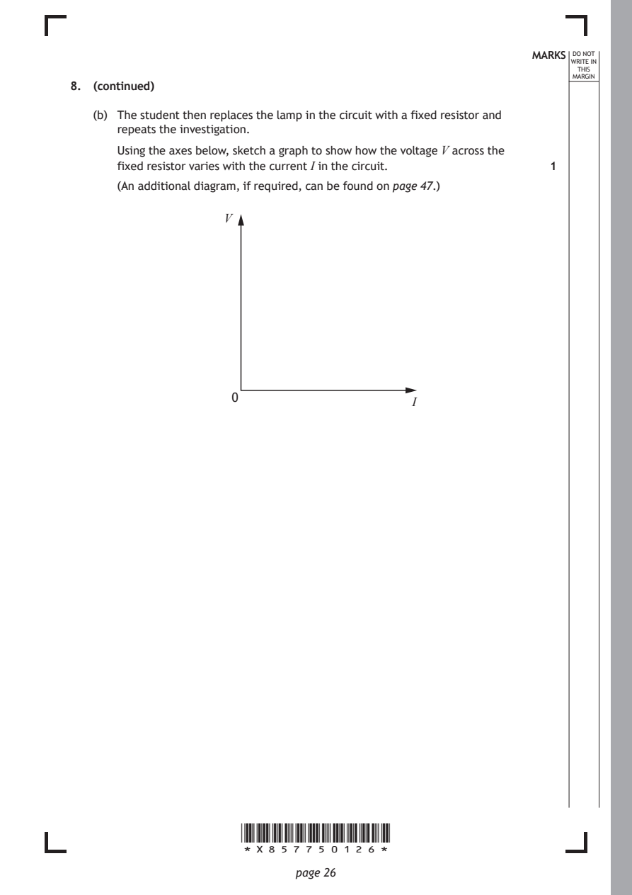
Selectable page text
MARKS _{W}^{D}_{R}^{O}_{I} _{T}^{N}OT
E IN
THIS
MARGIN
8. (continued)
(b) The student then replaces the lamp in the circuit with a fixed resistor and
repeats the investigation.
Using the axes below, sketch a graph to show how the voltage V across the
fixed resistor varies with the current I in the circuit. 1
(An additional diagram, if required, can be found on page 47.)
V
0
I
*X857750126*
page 26PDF page 27
Selectable page text
[Turn over for next question
DO NOT WRITE ON THIS PAGE
*X857750127*
page 27PDF page 28
Section 2, Question 9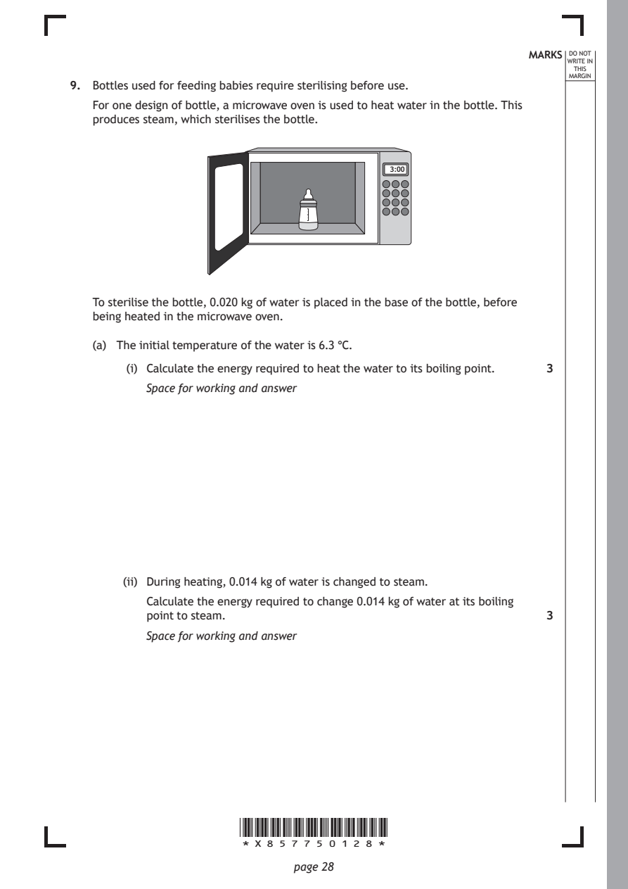
Selectable page text
MARKS _{W}^{D}_{R}^{O}_{I} _{T}^{N}OT
E IN
THIS
MARGIN
9. Bottles used for feeding babies require sterilising before use.
For one design of bottle, a microwave oven is used to heat water in the bottle. This
produces steam, which sterilises the bottle.
3:00
To sterilise the bottle, 0.020 kg of water is placed in the base of the bottle, before
being heated in the microwave oven.
(a) The initial temperature of the water is 6.3 °C.
(i) Calculate the energy required to heat the water to its boiling point. 3
Space for working and answer
(ii) During heating, 0.014 kg of water is changed to steam.
Calculate the energy required to change 0.014 kg of water at its boiling
point to steam. 3
Space for working and answer
*X857750128*
page 28PDF page 29
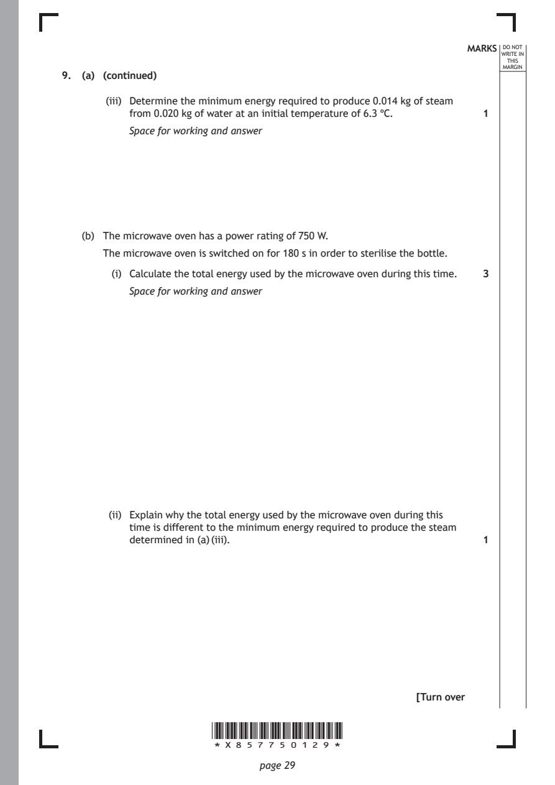
Selectable page text
MARKS _{W}^{D}_{R}^{O}_{I} _{T}^{N}OT
E IN
THIS
MARGIN
9. (a) (continued)
(iii) Determine the minimum energy required to produce 0.014 kg of steam
from 0.020 kg of water at an initial temperature of 6.3 °C. 1
Space for working and answer
(b) The microwave oven has a power rating of 750 W.
The microwave oven is switched on for 180 s in order to sterilise the bottle.
(i) Calculate the total energy used by the microwave oven during this time. 3
Space for working and answer
(ii) Explain why the total energy used by the microwave oven during this
time is different to the minimum energy required to produce the steam
determined in (a) (iii). 1
[Turn over
*X857750129*
page 29PDF page 30
Section 2, Question 10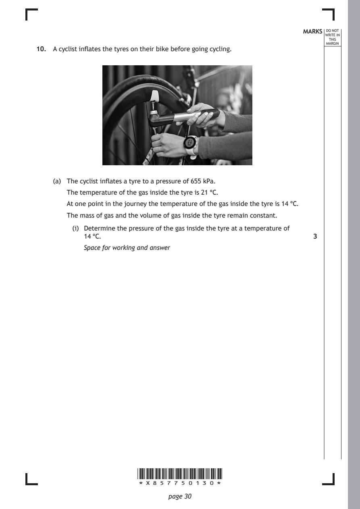
Selectable page text
MARKS _{W}^{D}_{R}^{O}_{I} _{T}^{N}OT
E IN
THIS
MARGIN
10. A cyclist inflates the tyres on their bike before going cycling.
(a) The cyclist inflates a tyre to a pressure of 655 kPa.
The temperature of the gas inside the tyre is 21 °C.
At one point in the journey the temperature of the gas inside the tyre is 14 °C.
The mass of gas and the volume of gas inside the tyre remain constant.
(i) Determine the pressure of the gas inside the tyre at a temperature of
14 °C. 3
Space for working and answer
*X857750130*
page 30PDF page 31
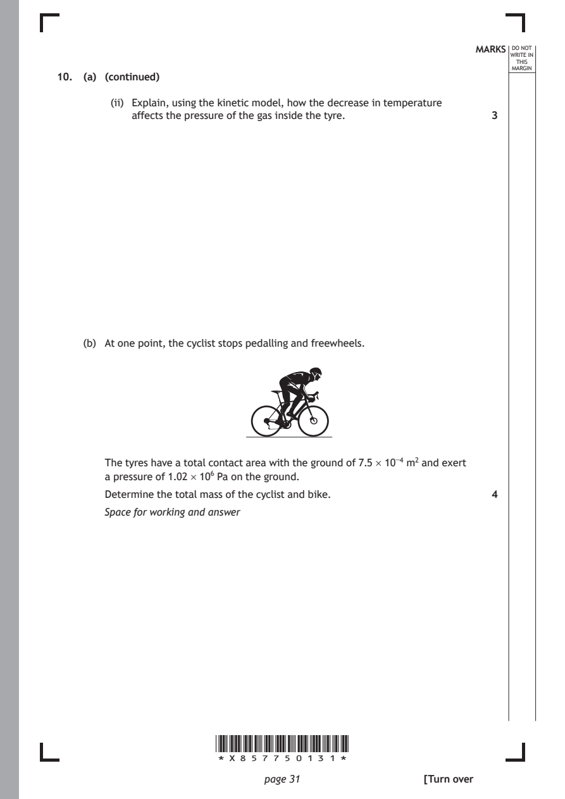
Selectable page text
MARKS _{W}^{D}_{R}^{O}_{I} _{T}^{N}OT
E IN
THIS
MARGIN
10. (a) (continued)
(ii) Explain, using the kinetic model, how the decrease in temperature
affects the pressure of the gas inside the tyre. 3
(b) At one point, the cyclist stops pedalling and freewheels.
The tyres have a total contact area with the ground of 7.5 × 10⁻⁴ m² and exert
a pressure of 1.02 × 10⁶ Pa on the ground.
Determine the total mass of the cyclist and bike. 4
Space for working and answer
*X857750131*
page 31 [Turn overPDF page 32
Section 2, Question 11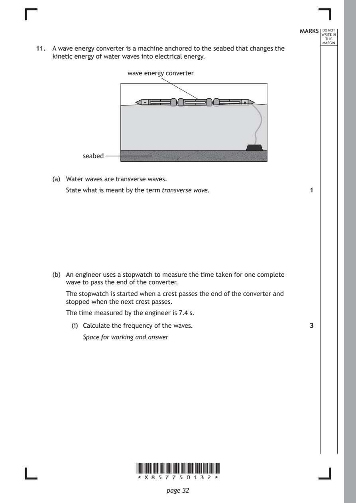
Selectable page text
MARKS _{W}^{D}_{R}^{O}_{I} _{T}^{N}OT
E IN
THIS
MARGIN
11. A wave energy converter is a machine anchored to the seabed that changes the
kinetic energy of water waves into electrical energy.
wave energy converter
seabed
(a) Water waves are transverse waves.
State what is meant by the term transverse wave. 1
(b) An engineer uses a stopwatch to measure the time taken for one complete
wave to pass the end of the converter.
The stopwatch is started when a crest passes the end of the converter and
stopped when the next crest passes.
The time measured by the engineer is 7.4 s.
(i) Calculate the frequency of the waves. 3
Space for working and answer
*X857750132*
page 32PDF page 33
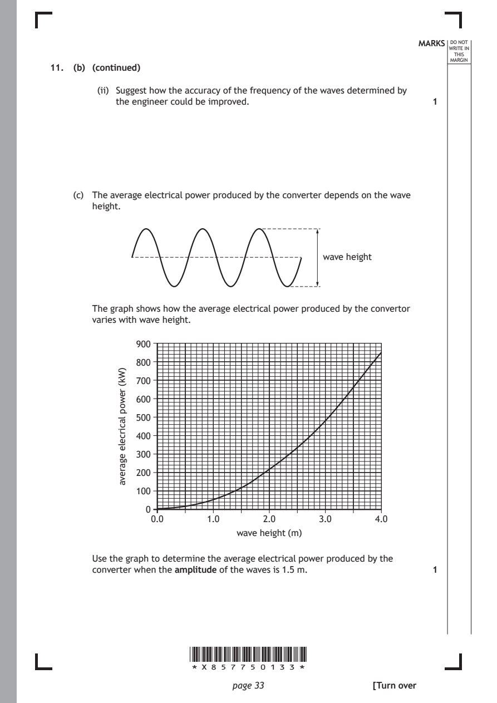
Selectable page text
MARKS _{W}^{D}_{R}^{O}_{I} _{T}^{N}OT
E IN
THIS
MARGIN
11. (b) (continued)
(ii) Suggest how the accuracy of the frequency of the waves determined by
the engineer could be improved.
(c) The average electrical power produced by the converter depends on the wave
height.
wave height
The graph shows how the average electrical power produced by the convertor
varies with wave height.
0.0 1.0 2.0 3.0 4.0
wave height (m)
*X857750133*
page 33
)Wk(
rewop
lacircele
egareva
1
900
800
700
600
500
400
300
200
100
0
Use the graph to determine the average electrical power produced by the
converter when the amplitude of the waves is 1.5 m. 1
[Turn overPDF page 34
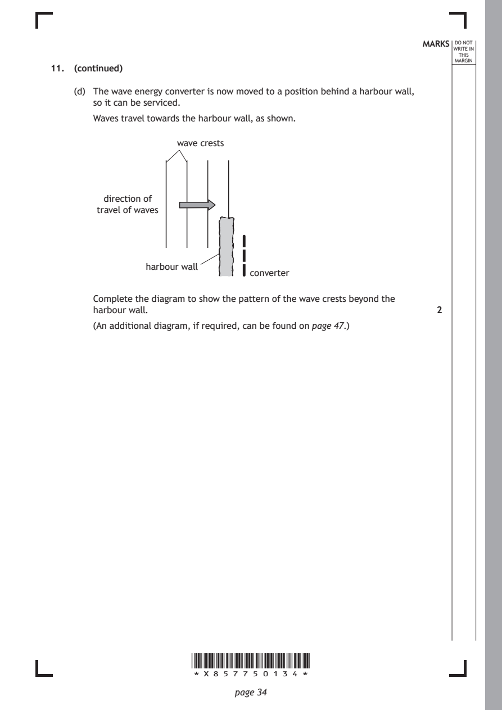
Selectable page text
MARKS _{W}^{D}_{R}^{O}_{I} _{T}^{N}OT
E IN
THIS
MARGIN
11. (continued)
(d) The wave energy converter is now moved to a position behind a harbour wall,
so it can be serviced.
Waves travel towards the harbour wall, as shown.
wave crests
direction of
travel of waves
harbour wall
converter
Complete the diagram to show the pattern of the wave crests beyond the
harbour wall. 2
(An additional diagram, if required, can be found on page 47.)
*X857750134*
page 34PDF page 35
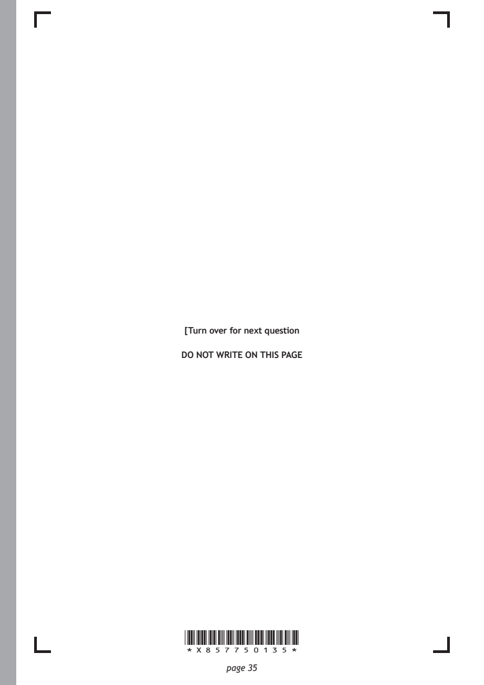
Selectable page text
[Turn over for next question
DO NOT WRITE ON THIS PAGE
*X857750135*
page 35PDF page 36
Section 2, Question 12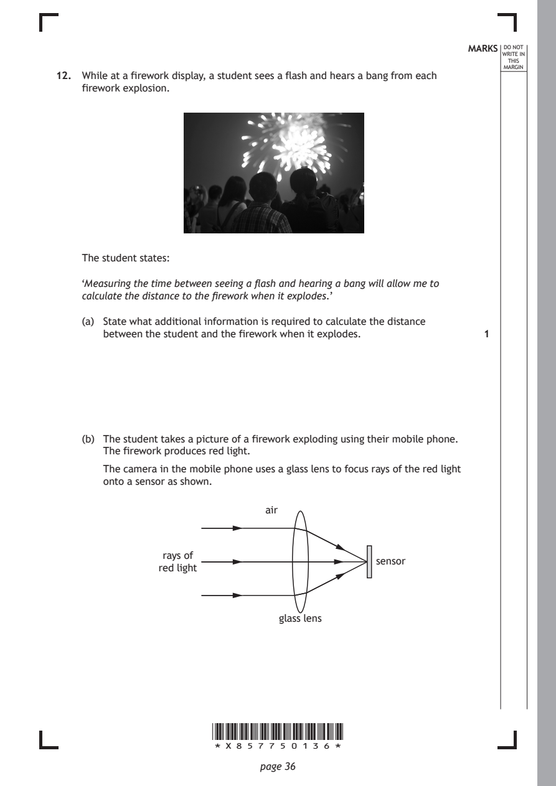
Selectable page text
MARKS _{W}^{D}_{R}^{O}_{I} _{T}^{N}OT
E IN
THIS
MARGIN
12. While at a firework display, a student sees a flash and hears a bang from each
firework explosion.
The student states:
‘Measuring the time between seeing a flash and hearing a bang will allow me to
calculate the distance to the firework when it explodes.’
(a) State what additional information is required to calculate the distance
between the student and the firework when it explodes. 1
(b) The student takes a picture of a firework exploding using their mobile phone.
The firework produces red light.
The camera in the mobile phone uses a glass lens to focus rays of the red light
onto a sensor as shown.
air
rays of
sensor
red light
glass lens
*X857750136*
page 36PDF page 37
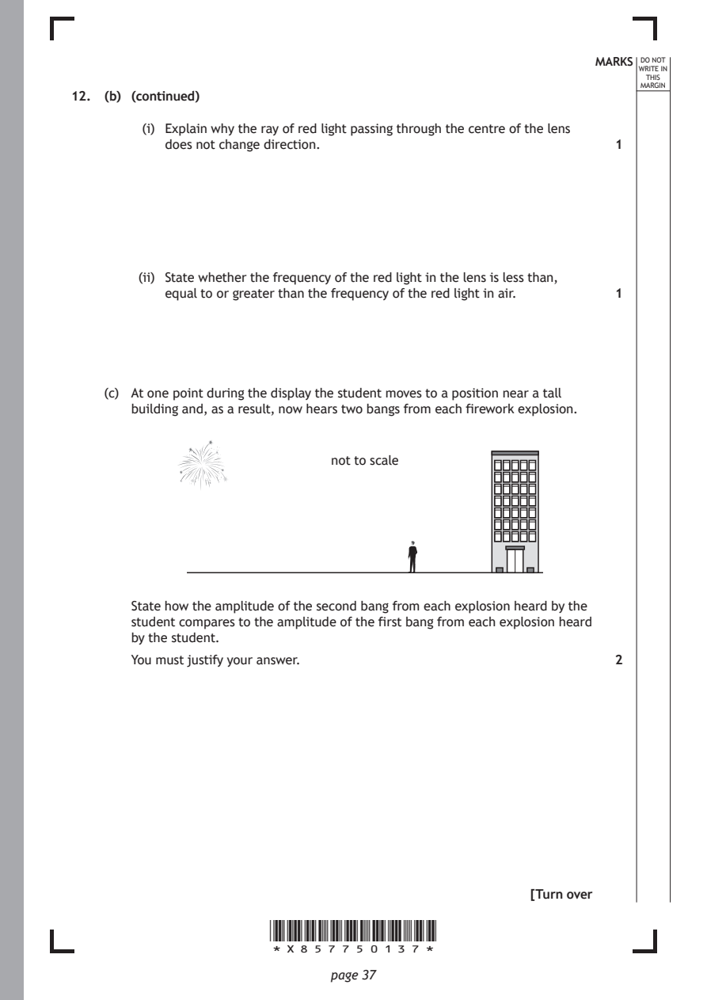
Selectable page text
MARKS _{W}^{D}_{R}^{O}_{I} _{T}^{N}OT
E IN
THIS
MARGIN
12. (b) (continued)
(i) Explain why the ray of red light passing through the centre of the lens
does not change direction. 1
(ii) State whether the frequency of the red light in the lens is less than,
equal to or greater than the frequency of the red light in air. 1
(c) At one point during the display the student moves to a position near a tall
building and, as a result, now hears two bangs from each firework explosion.
not to scale
State how the amplitude of the second bang from each explosion heard by the
student compares to the amplitude of the first bang from each explosion heard
by the student.
You must justify your answer. 2
[Turn over
*X857750137*
page 37PDF page 38
Section 2, Question 13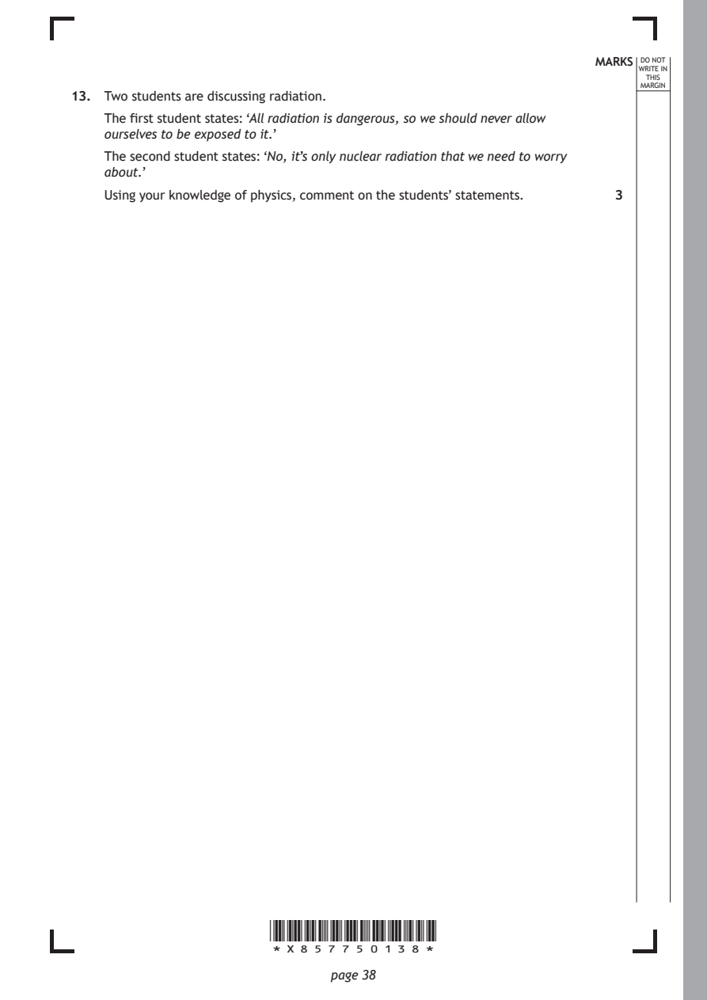
Selectable page text
MARKS _{W}^{D}_{R}^{O}_{I} _{T}^{N}OT
E IN
THIS
MARGIN
13. Two students are discussing radiation.
The first student states: ‘All radiation is dangerous, so we should never allow
ourselves to be exposed to it.’
The second student states: ‘No, it’s only nuclear radiation that we need to worry
about.’
Using your knowledge of physics, comment on the students’ statements. 3
*X857750138*
page 38PDF page 39
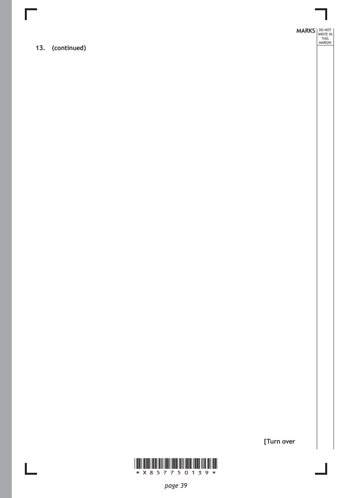
Selectable page text
MARKS _{W}^{D}_{R}^{O}_{I} _{T}^{N}OT
E IN
THIS
MARGIN
13. (continued)
[Turn over
*X857750139*
page 39PDF page 40
Section 2, Question 14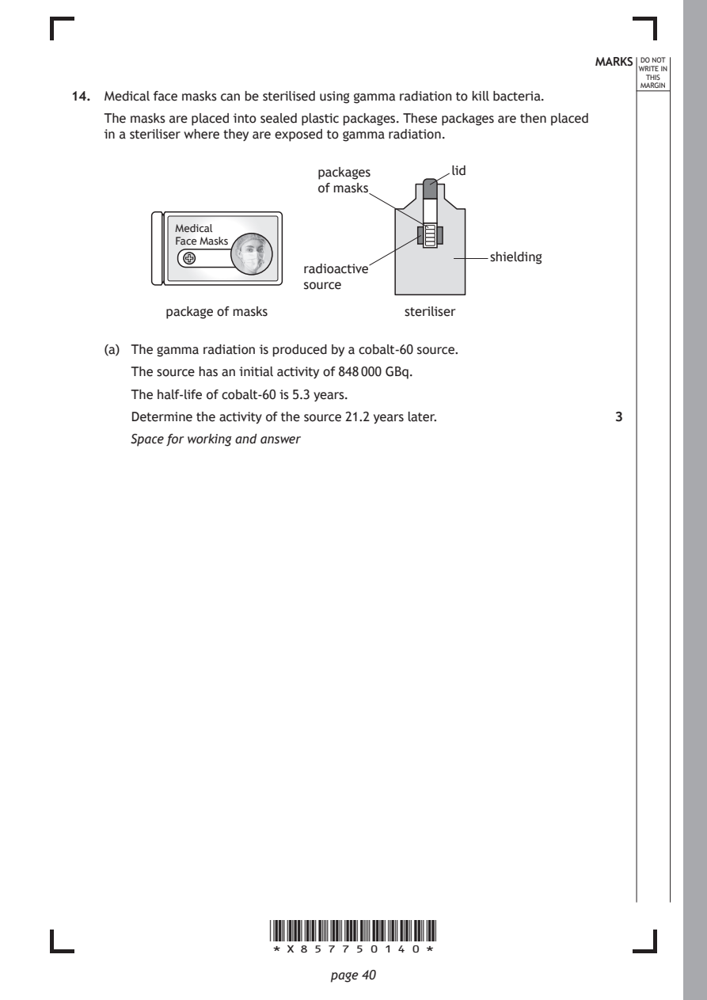
Selectable page text
MARKS _{W}^{D}_{R}^{O}_{I} _{T}^{N}OT
E IN
THIS
MARGIN
14. Medical face masks can be sterilised using gamma radiation to kill bacteria.
The masks are placed into sealed plastic packages. These packages are then placed
in a steriliser where they are exposed to gamma radiation.
packages lid
of masks
Medical
Face Masks
shielding
radioactive
source
package of masks steriliser
(a) The gamma radiation is produced by a cobalt-60 source.
The source has an initial activity of 848 000 GBq.
The half-life of cobalt-60 is 5.3 years.
Determine the activity of the source 21.2 years later. 3
Space for working and answer
*X857750140*
page 40PDF page 41
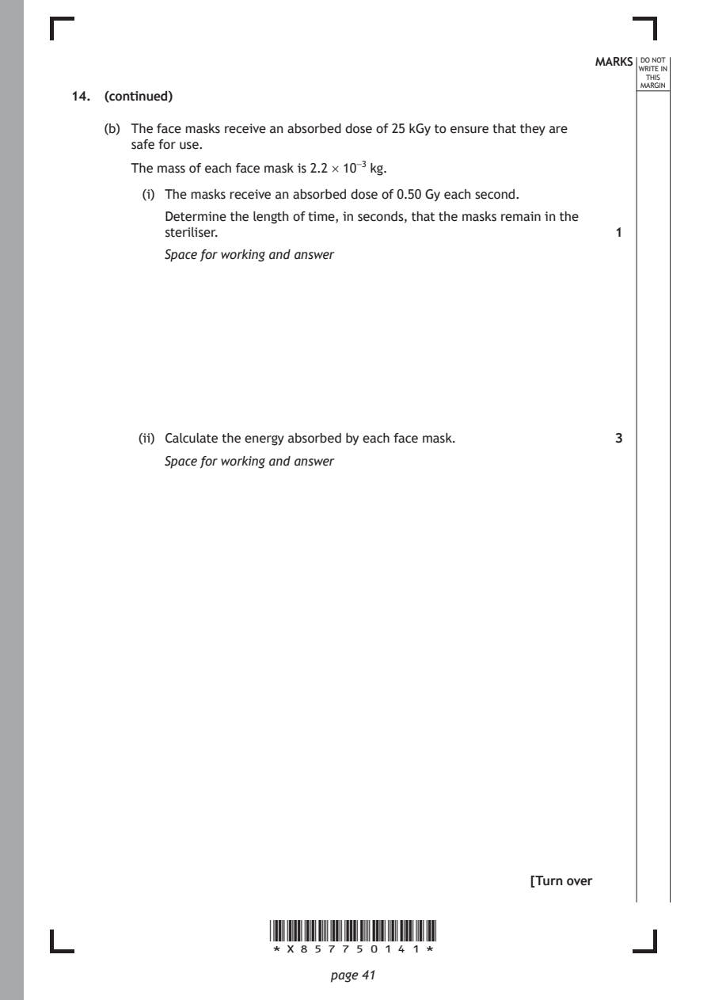
Selectable page text
MARKS _{W}^{D}_{R}^{O}_{I} _{T}^{N}OT
E IN
THIS
MARGIN
14. (continued)
(b) The face masks receive an absorbed dose of 25 kGy to ensure that they are
safe for use.
The mass of each face mask is 2.2 × 10⁻³ kg.
(i) The masks receive an absorbed dose of 0.50 Gy each second.
Determine the length of time, in seconds, that the masks remain in the
steriliser. 1
Space for working and answer
(ii) Calculate the energy absorbed by each face mask. 3
Space for working and answer
[Turn over
*X857750141*
page 41PDF page 42
Section 2, Question 15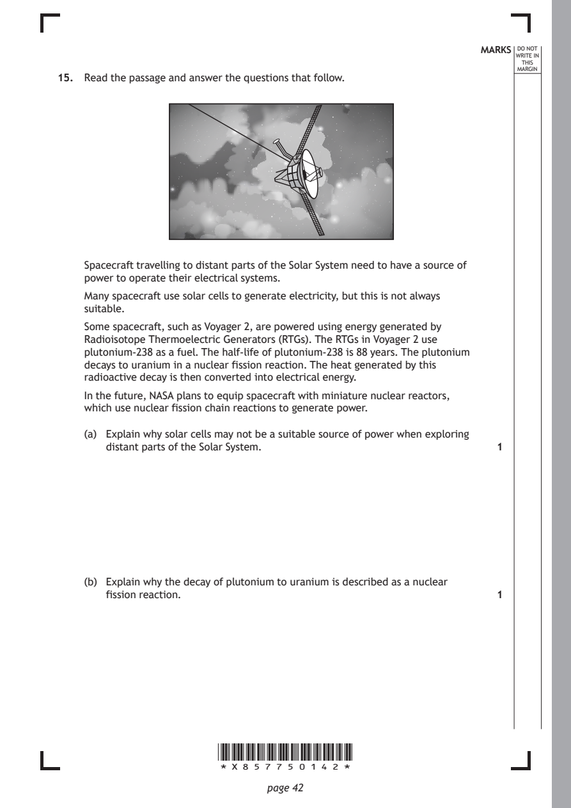
Selectable page text
MARKS _{W}^{D}_{R}^{O}_{I} _{T}^{N}OT
E IN
THIS
MARGIN
15. Read the passage and answer the questions that follow.
Spacecraft travelling to distant parts of the Solar System need to have a source of
power to operate their electrical systems.
Many spacecraft use solar cells to generate electricity, but this is not always
suitable.
Some spacecraft, such as Voyager 2, are powered using energy generated by
Radioisotope Thermoelectric Generators (RTGs). The RTGs in Voyager 2 use
plutonium-238 as a fuel. The half-life of plutonium-238 is 88 years. The plutonium
decays to uranium in a nuclear fission reaction. The heat generated by this
radioactive decay is then converted into electrical energy.
In the future, NASA plans to equip spacecraft with miniature nuclear reactors,
which use nuclear fission chain reactions to generate power.
(a) Explain why solar cells may not be a suitable source of power when exploring
distant parts of the Solar System. 1
(b) Explain why the decay of plutonium to uranium is described as a nuclear
fission reaction. 1
*X857750142*
page 42PDF page 43
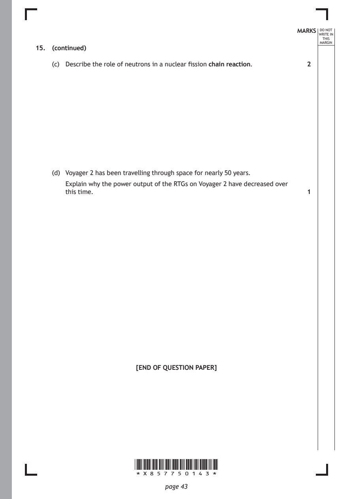
Selectable page text
MARKS _{W}^{D}_{R}^{O}_{I} _{T}^{N}OT
E IN
THIS
MARGIN
15. (continued)
(c) Describe the role of neutrons in a nuclear fission chain reaction. 2
(d) Voyager 2 has been travelling through space for nearly 50 years.
Explain why the power output of the RTGs on Voyager 2 have decreased over
this time. 1
[END OF QUESTION PAPER]
*X857750143*
page 43PDF page 44

Selectable page text
*X857750144*
page 44PDF page 45

Selectable page text
*X857750145*
page 45PDF page 46
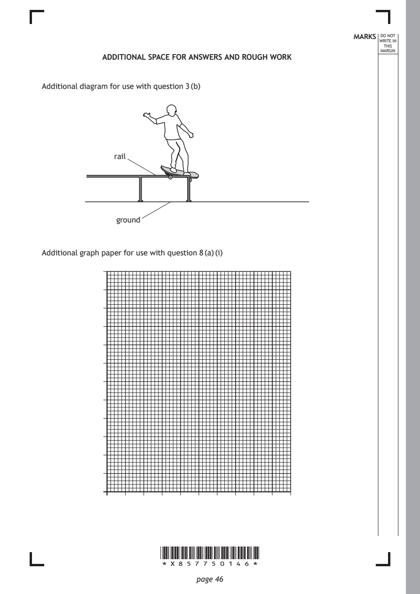
Selectable page text
MARKS _{W}^{D}_{R}^{O}_{I} _{T}^{N}OT
E IN
THIS
MARGIN
ADDITIONAL SPACE FOR ANSWERS AND ROUGH WORK
Additional diagram for use with question 3 (b)
rail
ground
Additional graph paper for use with question 8 (a) (i)
*X857750146*
page 46PDF page 47
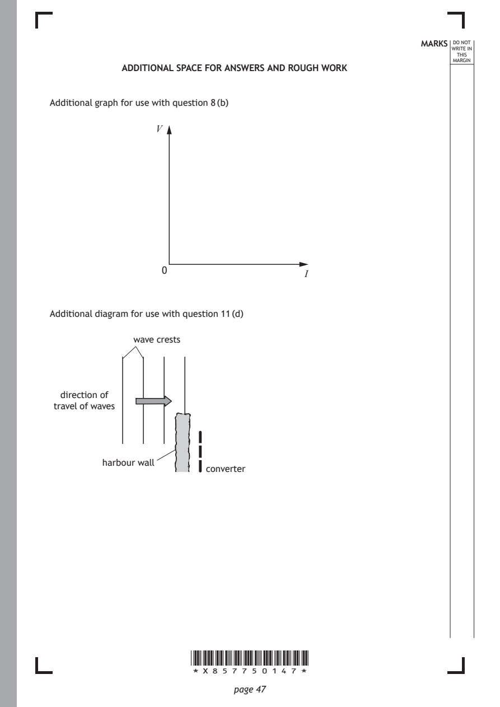
Selectable page text
MARKS _{W}^{D}_{R}^{O}_{I} _{T}^{N}OT
E IN
THIS
MARGIN
ADDITIONAL SPACE FOR ANSWERS AND ROUGH WORK
Additional graph for use with question 8 (b)
V
0
I
Additional diagram for use with question 11 (d)
wave crests
direction of
travel of waves
harbour wall
converter
*X857750147*
page 47PDF page 48
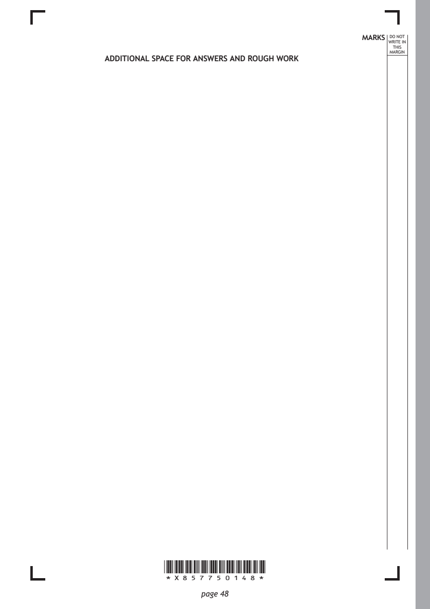
Selectable page text
MARKS _{W}^{D}_{R}^{O}_{I} _{T}^{N}OT
E IN
THIS
MARGIN
ADDITIONAL SPACE FOR ANSWERS AND ROUGH WORK
*X857750148*
page 48PDF page 49

Selectable page text
MARKS _{W}^{D}_{R}^{O}_{I} _{T}^{N}OT
E IN
THIS
MARGIN
ADDITIONAL SPACE FOR ANSWERS AND ROUGH WORK
*X857750149*
page 49PDF page 50

Selectable page text
MARKS _{W}^{D}_{R}^{O}_{I} _{T}^{N}OT
E IN
THIS
MARGIN
ADDITIONAL SPACE FOR ANSWERS AND ROUGH WORK
*X857750150*
page 50PDF page 51

Selectable page text
[BLANK PAGE]
DO NOT WRITE ON THIS PAGE
*X857750151*
page 51PDF page 52
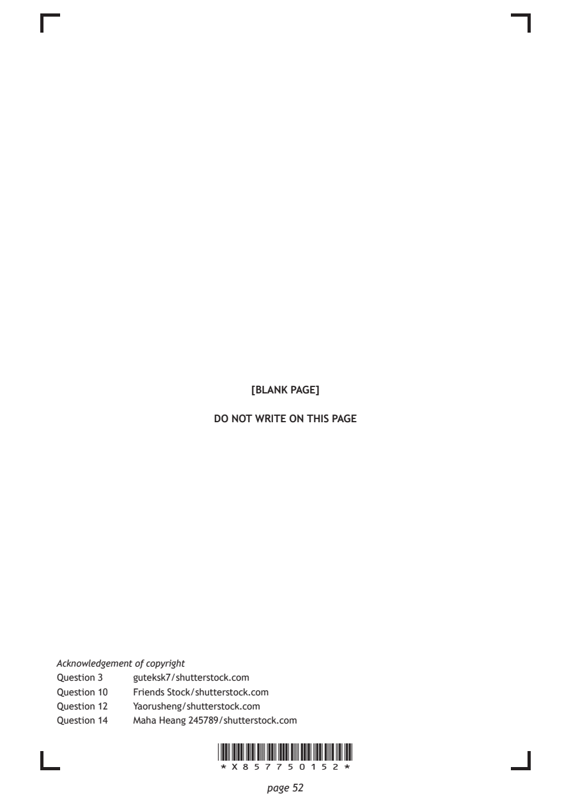
Selectable page text
[BLANK PAGE]
DO NOT WRITE ON THIS PAGE
Acknowledgement of copyright
Question 3 guteksk7/shutterstock.com
Question 10 Friends Stock/shutterstock.com
Question 12 Yaorusheng/shutterstock.com
Question 14 Maha Heang 245789/shutterstock.com
*X857750152*
page 52